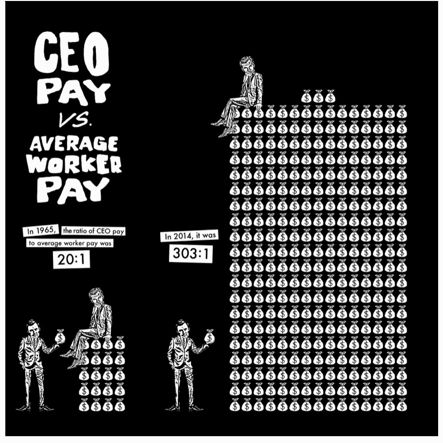

前阵子就职典礼上，Sanders 穿着大棉衣端坐在椅子上的照片突然在互联网上流行。这张照片再次引起了我对这位 80 岁的高龄参议员的注意。之所以是再次，是因为在 2016 和 2020 的总统选举上，Sanders 都宣布了竞选，但都失败了。其次，他经常自称为 democratic socialist（民主社会主义），尽管有这概念的支持者，但也有反对者对 “democratic” 和 “socialist” 提出了质疑。
最令我感兴趣的是，这位 80 岁高龄的参议员意外地在年轻人中有一众的支持者，这和其它政治家带来的印象特别地不同。
《Bernie Sanders’ Guide to Political Revolution》是他在 2017 年发表的著作，或许可以作为一本指引了解一下这位很受欢迎但也有不少质疑的参议员（似乎只要是政治家，都少不了大量的质疑）。
教育问题
教育问题，这个问题不仅仅是美国公民能感受到，而且对于我这种国际留学生，也是头痛的问题。一方面，是优秀的教育资源 —— 大量世界顶级的优秀学府，世界各地都有人挤破头地去申请。另一方面，是连年攀升的学费 —— 动则一年几万美金的学费，尤其是众多私立大学，5 万美金已经不是稀有的数字，更何况对于本科生来说，要准备好四年的学费。如果是公立大学，而且是该州的美国公民时，那学费才能在相对之下便宜一点，但一年也要近两万美金。
Tuition
学费已经是一个非常大的支出，其次是书本。我在读 Master 学位期间，每个开学的第一个星期都在头疼教材的问题。一本教材动辄 100 刀甚至更高，如果买新书，一年下来也要 1000 刀。所以大部分人都会寻求旧书或电子版。但出版社似乎也明白了学生的手段，一方面，隔几年就出新版，另一方面，要么不出电子版，就算出了电子版，那也只能租一段时间，而不能买。所以，我在学校期间，就不得不要么不用教材，只借助教授的 PPT（有些教授知道教材贵，所以大部分内容都在 PPT 上了），要么和别人共用一本教材，再或者就是寻求网络资源了。
这里不能称赞一下一位我在校期间遇到的使用了开源教材的教授。这位教授使用的是开源免费，同时也可以选择花一点费用支持纸质版的 Eloquent JavaScript 作为教材，这对于学生来说是为之欣慰的大好消息。
Textbook
当然，尽管有 Financial Aids 和 Student Loans 等渠道，但对 Sanders 来说，这远远不能解决问题。因为他的目标是：TUITION FREE!
在 Sanders 看来，美国应该像丹麦，冰岛，挪威等国一样，提供免费的教育资源，甚至还应该像德国一样，还要对国际留学生实施减免政策。一个数字就是，只要 200 刀一个学期，一个美国学生就能在一所欧洲的顶级大学攻读完一份学位。
而至于政府支付的费用，虽然看上去较大，但 Sanders 认为，只要国民素质提高了，那么国民的收入和因此带来的经济收益都会提高，国家财政收入自然会跟着水涨船高的。这会是一个良性的正循环。
税收和华尔街
读这本书时，刚好也是 WSB 与 Wall Street 空头们对战的期间。这次对战，也许侧面说明了人们对于华尔街巨头们的痛恨。
Sanders 在书中就点名指责一些大公司，像 Johnson Controls, IMB, XEROX 等，借助离岸避税天堂而逃脱了大量的缴税。这些行为在他眼中是不能接受的，必须采用法律行为弥补漏洞。通过避税等手段，这些巨头们已经获得了大量的收益，这些收益只会使得国民间的财富差距变得更加巨大。因此，Sanders 坚持要对这些巨头们收取更高的税。
Pay
在书中，也提到了巴菲特所应缴纳的税率是比他的秘书还低的，因为巴菲特的收入来源于分红，而他的秘书的收入是工资。这两者的税率不同，从而导致了巨头们的税率反而比员工还低的怪象。Sanders 也坚持认为这些税率应该保持一致。
同样这些华尔街巨头们，尤其是像标普公司等评级机构，是 Sanders 认为的 2008 金融危机的罪魁祸首。一方面，Sanders 指出，评级机构应该是中立的，非盈利的，应该被监管，从而避免再次出现金融灾难。另一方面，Sanders 也认为，他们所受到的惩罚远远不够。这里面，一个原因就是他们的体量太大，“大到不能倒”（Too big to jail），甚至政府担心对他们实施的惩罚举措会对国民经济产生负面影响。而 Sanders 则采取另一看法，“大到不能出现” （Too big to exist）：就是因为他们体量过于庞大，所以他们就不应该出现在市场上。过大的体量本身就是对自由市场的潜在威胁。
最低工资
Sanders 的观点是调整最低工资到至少 $15 每小时。
首先是对现在最低工资的不满。现有的最低工资甚至不能满足一户家庭选择一个市场均价的 1b1b 的租金。这极大地影响了人们的生活质量。
其次是回应一些对此政策的批判。一个常见的批评意见是：如果最低工资提高，那么佣金增加，企业势必会减少招工。但 Sanders 表示，早在 2013 年，San Jose 就提高了最低工资标准到 $10 每小时，到了 2014 年，其就业率增长确明显超越了其它城市。也在 2014 年初，华盛顿州的 SeaTac 把最低工资提高到 $15 每小时。尽管起初也遭到大量警告说会影响就业率，但事实证明，餐馆等设施的生意明显变好，反而招了更多的工人，所以整体上最低工资反而提高了就业率。
还有更多的矛盾和问题
因为篇幅有限，这里只列举了以上三个具有代表性的问题。但书中提到了更多的问题：
- 医疗和医保：相较于其它国家，惊人的费用和保费让民众苦不堪言。
- 移民
- 环境问题：作者提倡新能源和发展公共交通
- 还有更多
作为书籍的一些问题
这本书，比较简短，基本就是就阐述问题（抱怨现状）之后提出自己的解决方案。所以作为 Sanders 本人的一本理念宣传手册来说，自然是合格的。但如果从学术严谨性上来说，就有比较大的问题了。
引用
这本书里确实有很多例子，也提到了一些机构发表的报告。但这些例子和报告，只有极少数在每篇章节的最后标注了来源。大部分的例子和报告，比如某某机构发表的报告，只提了机构的名字，而没有注明报告的标题或者链接。作为读者，我很怀疑数字的来源可不可靠。对于引用，我目前的态度就是，尽管大部分引用我不会去看，但没有引用会让我对文中的数字和结论抱有强烈的怀疑。
论证
这本书开篇提到的就是最低工资的问题，并开始就提到了要提高到 $15 的标准。尽管后文解释了提高最低工资的必要性及积极影响，但始终没有解释为什么是 15 而不是更多。我希望看到的是，就算文章没有篇幅论证数字 15 的正确性，也应该要有相关的引用来说明 15 是足够的，是合理的，是能支持作者观点的。缺乏这些论证，我在阅读时就在好奇：为什么作者不说 15 是怎么来的？为什么 15 就够了？万一 15 不够，要提高到 20 才行呢？
还有讨论的空间
大概受限于文章篇幅，其实还有一些问题没有讨论，比如枪支问题。
简评
读完全书，Sanders 大部分的政策给我的感觉是需要政府大量的财政支出用于教育，医疗等。而这些财政的支出是为了国民素质的整体发展，而国民素质的集体发展，自然会带来可观的，可持续的长期收益。这个长期收益，是远远大于政府的财政支出的。另一方面，现在的财政政策也具有巨大的提升空间，比如现在有一些补贴是给传统石油公司的，Sanders 坚持这些钱应该投资到新能源和国民福利上。
因此，Sanders 的政策整体上，是在向北欧学习，试图建立一个高福利的国家。确实，这个世界上，已经有采取类似政策并成功执行的国家，但对于美国先进但有无比复杂的国家，这些政策能不能平稳实施，我只能保持怀疑。
总的来说，如果是对于想了解 Sanders 政见的读者，本书不妨一读，而且篇幅不长，写作风格读起来也不费力。但只是在读文章时，记得对一些数字和结论保持批评态度，因为作者没有提供足够的引用来证明自己的观点。